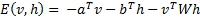
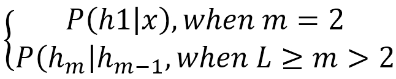
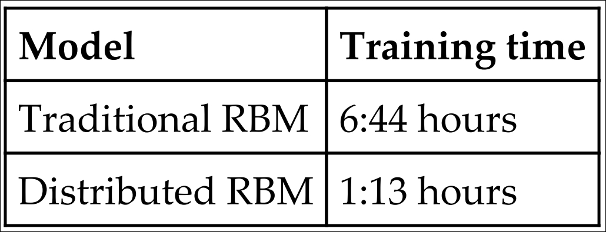
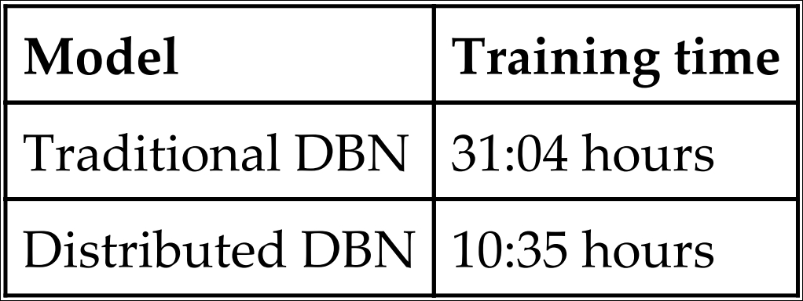

DBNs have so far achieved a lot in numerous applications such as speech and phone recognition [127], information retrieval [128], human motion modelling[129], and so on. However, the sequential implementation for both RBM and DBNs come with various limitations. With a large-scale dataset, the models show various shortcomings in their applications due to the long, time consuming computation involved, memory demanding nature of the algorithms, and so on. To work with Big data, RBMs and DBNs require distributed computing to provide scalable, coherent and efficient learning.
To make DBNs acquiescent to the large-scale dataset stored on a cluster of computers, DBNs should acquire a distributed learning approach with Hadoop and Map-Reduce. The paper in [130] has shown a key-value pair approach for each level of an RBM, where the pre-training is accomplished with layer-wise, in a distributed environment in Map-Reduce framework. The learning is performed on Hadoop by an iterative computing method for the training RBM. Therefore, the distributed training of DBNs is achieved by stacking multiple RBMs.
As mentioned in the earlier sections, the energy function for an RBM is given by:

Let an input dataset I = {xi = i= 1, 2,... N} be used for the distributed learning of a RBM. As discussed in the earlier section, for the learning of a DBN, the weights and biases in each level of the RBM are initialized at first by using a greedy layer-wise unsupervised training. The purpose of the distributed training is to learn the weights and the associated biases b and c. For a distributed RBM using Map-Reduce, the one Map-Reduce job is essential in every epoch.
For matrix-matrix multiplication, Gibbs sampling is used, and for training of RBMs it takes most of the computation time. Therefore, to truncate the computation time for this, Gibbs sampling can be distributed in the map phase among multiple datasets running different Datanodes on the Hadoop framework.
Initially, different parameters needed for training, such as the number of neurons for visible and hidden layers, the input layer bias a, the hidden layer bias b, weight W, number of epochs (say N), learning rate, and so on, are initialized. The number of epochs signify that both the map and reduce phase will iterate for N number of times. For each epoch, the mapper runs for each block of the Datanodes, and performs Gibbs sampling to calculate the approximate gradients of W, a, and b. The reducer then updates those parameters with the computed increments needed for the next epoch. Hence, from the second epoch, the input value for the map phase, the updated values of W, a, and b, are calculated from the output of the reducer in the previous epoch.
The input dataset I is split into a number of chunks, and stored in different blocks, running on each Datanode. Each mapper running on the blocks will compute the approximate gradient of the weights and biases for a particular chunk stored on that block. The reducers then calculate the increments of respective parameters and update them accordingly. The process treats the resulting parameters and the updated values as the final outcome of the Map-Reduce phase of that particular epoch. After every epoch, the reducer decides whether to store the learned weight, if it is the final epoch or whether to increment the epoch index and propagate the key-value pair value to the next mapper.
For distributed training of DBNs with L number of hidden layers, the learning is performed with pre-training L RBMs. The bottom level RBM is trained as discussed, however, for the rest of the (L-1) RBMs, the input dataset is changed for each level.
The input data for mth level (L ¥ m > 1) RBM will be the conditional probability of hidden nodes of (m-1)th level RBMs:

This is the second phase of distributed training of back propagation algorithm to tune the global network. In this procedure, while computing the gradient of weights, the feed-forward and back-propagation methods take up the majority of the computation time. Hence, for each epoch, for faster execution, this procedure should be run in parallel on each mini-batch of the input dataset.
In the first step of the procedure, the learned weights for a L level DBN, namely, W1, W2,...WL are loaded into the memory, and other hyper-parameters are initialized. In this fine-tuning phase, the primary jobs for map and reduce phase are similar to that of the RBMs distributed training. The mapper will determine the gradients of the weights and eventually update the weight increment. The reducer updates the weight increments from one or more weights and passes the output to the mapper to perform the next iteration.
The main purpose of this procedure is to obtain some discriminative power of the model by placing the label layer on top of the global network and tuning the weights of the entire layers iteratively.
The paper [130] performed an experiment of distributed RBM and DBN on Hadoop cluster to provide a comparative study with the traditional sequential approach. The experiments were carried out on MNIST datasets for hand-written digits recognition. There were 60,000 images for the training set, and 10,000 images for the testing set. The block size of HDFS is set to 64 MB with a replication factor of 4. All the nodes are set to run 26 mappers and 4 reducers maximum. Interested readers can modify the block size and replication factor to see the final results of the experiments with these parameters.
The purpose of this experiment is to the compare the distributed RBMs and DBNs with the traditional training policy (sequential) in terms of training time. The sequential programs were performed on one CPU, whereas the distributed programs were on 16 CPUs of a node. Both the experiments were performed on the MNIST datasets mentioned earlier. The results obtained are summarized in Table 5.1 and Table 5.2:

Table 5.1:The table represents the time needed to complete the training of distributed and sequential RBMs

Table 5.2:The table represents the time needed to complete the training of distributed and sequential DBNs
The data shown in the table clearly depicts the advantages of using distributed RBMs and DBNs using Hadoop, over the traditional sequential approach. The training time for the distributed approach for the models has shown drastic improvement over the sequential one. Also, one crucial advantage of using the Hadoop framework for distribution is that it scales exceptionally well with the size of the training datasets, as well as the number of machines used to distribute it.
The next section of the chapter will demonstrate the programming approach for both the models using Deeplearning4j.